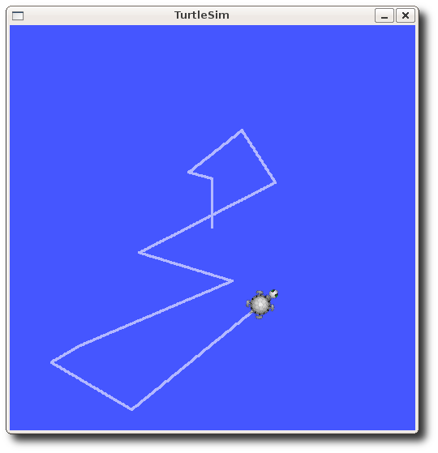
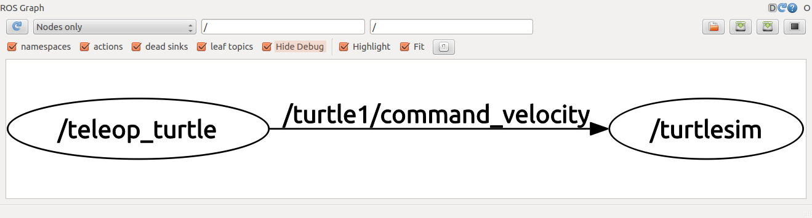
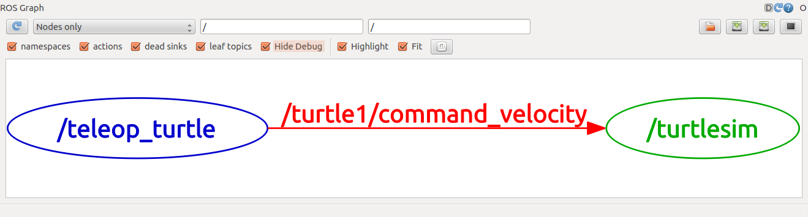

Getting Info About Nodes¶
Setup¶
roscore¶
Remember that we need to have roscore running so nodes can communicate to each other, in a new terminal:
roscore
roscore cannot run as another roscore/master is already running.
Please kill other roscore/master processes before relaunching
turtlesim¶
For this tutorial we will also use turtlesim. Please run in a new terminal: rosrun turtlesim turtlesim_node
turtle keyboard teleoperation¶
We'll also need something to drive the turtle around with. Lets see what other nodes are in the the turtlesim package. Type
rosrun turtlesim
TAB twice instead of pressing enter. The following should appear
leo ~ $ rosrun turtlesim
draw_square mimic turtlesim_node turtle_teleop_key
These are the four "nodes" in the turtlesim package. Each node is an individual executable, or program, but all are organized into a single package. Let's use the turtle_teleop_key package. in a '''new terminal''', type:
rosrun turtlesim turtle_teleop_key
[ INFO] 1254264546.878445000: Started node [/teleop_turtle], pid [5528], bound on [aqy], xmlrpc port [43918], tcpros port [55936], logging to [~/ros/ros/log/teleop_turtle_5528.log], using [real] time
Reading from keyboard
---------------------------
Use arrow keys to move the turtle.

Now that you can drive your turtle around, let's look at some tools we have to find out what's going on behind the scenes.
ROS Topics¶
In order to communicate nodes publish and/or subscribe to ROS Topics. The turtlesim_node and the turtle_teleop_key node are communicating with each other over the ROS topic command_velocity. The turtle_teleop_key publishes key strokes to the ROS topic command_velocity. The turtlesim_node subscribes to that same topic to receive the key strokes. Using rqt_graph we can see this relationship visually.
rqt_graph¶
rqt_graph is part of the rqt package. Unless you already have it installed, run:
sudo apt install ros-kinetic-rqt
sudo apt install ros-kinetic-rqt-common-plugins
rosrun rqt_graph rqt_graph
rqt_graph

If you place your mouse over /turtle1/command_velocity it will highlight the ROS nodes (here blue and green) and topics (here red). As stated before, the turtlesim_node and the turtle_teleop_key nodes are communicating on the topic named /turtle1/command_velocity.

rosnode¶
rosnode is a useful tool for finding information about nodes.
rosnode list¶
rosnode list returns a list of all currently running nodes. This will become a more and more useful tool as you run more and more nodes.
In a new terminal run:
rosnode list
turtlesim nodes running from the previous tutorial you should see something similar to:
/rosout
/turtlesim
/teleop_turtle
rosnode info¶
rosnode info returns information about a specified node. Run:
rosnode info turtlesim
--------------------------------------------------------------------------------
Node [/turtlesim]
Publications:
* /turtle1/color_sensor [turtlesim/Color]
* /rosout [rosgraph_msgs/Log]
* /turtle1/pose [turtlesim/Pose]
Subscriptions:
* /turtle1/cmd_vel [unknown type]
Services:
* /turtle1/teleport_absolute
* /turtlesim/get_loggers
* /turtlesim/set_logger_level
* /reset
* /spawn
* /clear
* /turtle1/set_pen
* /turtle1/teleport_relative
* /kill
contacting node http://Hulk:53422/ ...
Pid: 26992
Connections:
* topic: /rosout
* to: /rosout
* direction: outbound
* transport: TCPROS
rosnode info allows us to see the publications, subscriptions, and services associated with a certain node.
rosnode ping¶
rosnode ping can be used to test if a node is up. Let's use it now:
rosnode ping turtlesim
rosnode: node is [/turtlesim]
pinging /my_turtle with a timeout of 3.0s
xmlrpc reply from http://Hulk:53422/ time=1.152992ms
xmlrpc reply from http://Hulk:53422/ time=1.120090ms
xmlrpc reply from http://Hulk:53422/ time=1.700878ms
xmlrpc reply from http://Hulk:53422/ time=1.127958ms
Review¶
What was covered:
- ROS Topics = named buses over which nodes exchange messages.
rqt_graph= useful tool for visualizing interactions among nodesrosnode= ros+node : ROS tool to get information about a node.